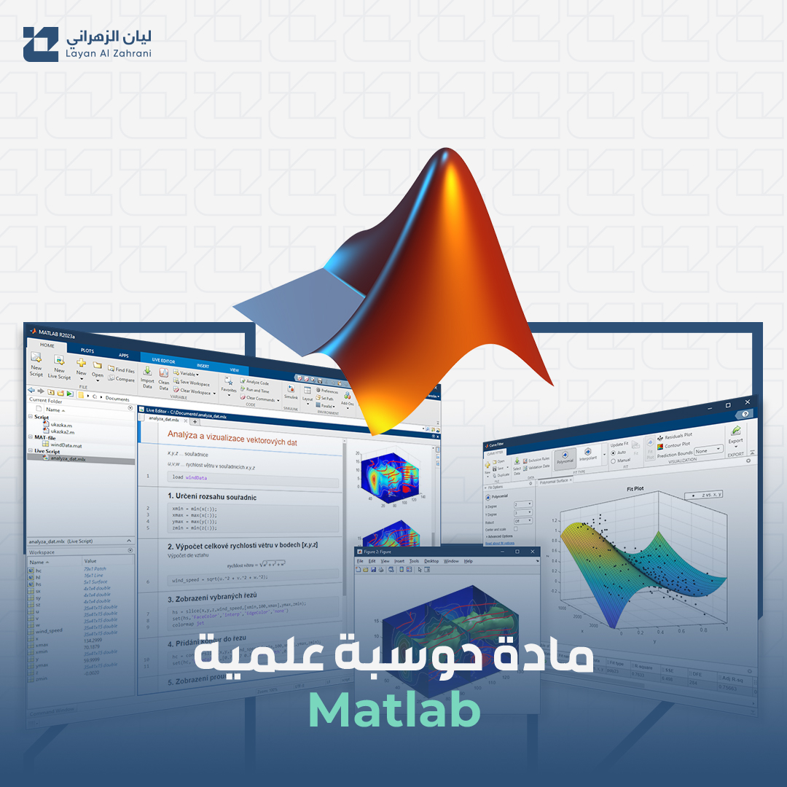
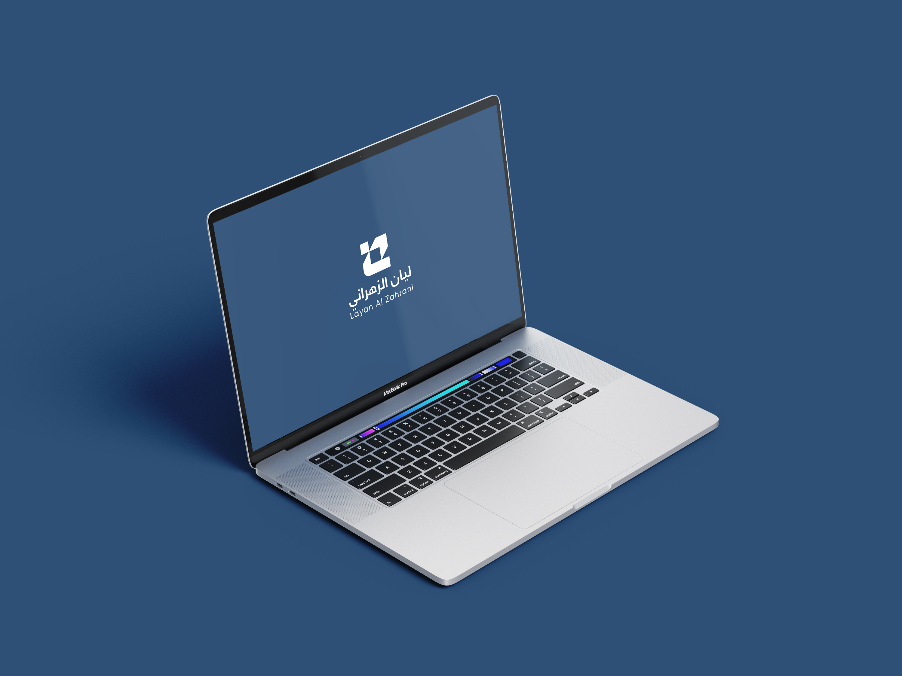
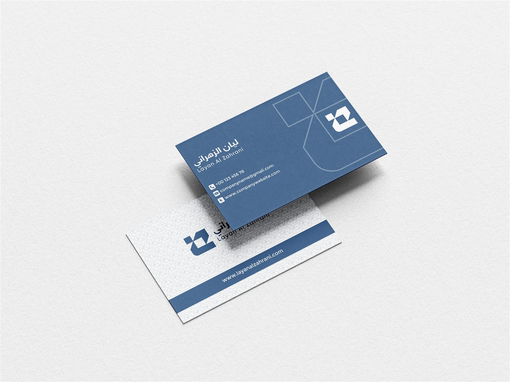

MATLAB Project
مادة حوسبة علمية
تطبيق مفاهيم التحليل والحسابات العلمية على واجهة عرض منظمة تعكس طبيعة المشروع الأكاديمي.
Portfolio 2026
بورتفوليو أكاديمي وعملي يعرض المشاريع التقنية، مهارات الحوسبة العلمية، وتطبيقات التصميم بأسلوب بصري موحد وهادئ.

About
هذا الموقع يقدم ليان الزهراني من خلال لغة الهوية نفسها: أشكال هندسية واضحة، لون أزرق عميق، ومساحات بيضاء تساعد الزائر على قراءة المحتوى بسرعة. التركيز هنا على المشاريع، المهارات، وطريقة عرض العمل بشكل مرتب واحترافي.
Selected Work

MATLAB Project
تطبيق مفاهيم التحليل والحسابات العلمية على واجهة عرض منظمة تعكس طبيعة المشروع الأكاديمي.

Identity System
استخدام الشعار والألوان والخطوط على مواد مطبوعة ورقمية متناسقة.
Brand Mark
علامة مختصرة قابلة للتوسع داخل الواجهات، الأيقونات، والخلفيات.
Capabilities
تحليل البيانات، النمذجة، وتمثيل النتائج بأسلوب واضح.
تحويل الملفات الأكاديمية إلى قصص بصرية قابلة للقراءة.
تطبيق الهوية على صفحات الويب والمواد التفاعلية.
Contact